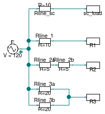
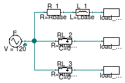

Package with example models
Information
This package contains examples for the use of models that can be found in
Buildings.Electrical.AC.OnePhase.Lines.
Extends from Modelica.Icons.ExamplesPackage (Icon for packages containing runnable examples).
Package Content
| Name |
Description |
 ACLine ACLine
|
Test model for a single phase line that uses commercial cable information |
| ACLine_L
|
Test model for a single phase inductive line |
| ACLine_R
|
Test model for a single phase resistive line |
| ACLine_RL
|
Test model for a single phase inductive-resistive line |
| ACSimpleGrid
|
Test model for a network model |
Test model for a single phase line that uses commercial cable information

Information
This example demonstrates how to use a line model to connect
a source to a load that uses commercial cable information.
The model has four different loads. The load sc_load represents
a short circuit R=0. The current that flows through the load depends
on the impedance of the line.
The remaining three loads R1, R2, and R3
are resistive loads. Each load is connected to the source with different configurations,
however the equivalent impedance between each load and the source is the same.
Since the equivalent impedances are the same, each load draws the same current.
Extends from Modelica.Icons.Example (Icon for runnable examples).
Modelica definition
model ACLine
"Test model for a single phase line that uses commercial cable information"
extends Modelica.Icons.Example;
Sources.FixedVoltage E( definiteReference=true,
f=60,
V=120)
"Voltage source";
Loads.Impedance R1(R=10)
"Resistive load 1";
Line line_1(
P_nominal=5000,
l=2000,
mode=Types.CableMode.commercial,
commercialCable=
Transmission.LowVoltageCables.Cu50(),
V_nominal=120)
"Resistive line that connects to load 1";
Line line_2a(
P_nominal=5000,
mode=Types.CableMode.commercial,
commercialCable=
Transmission.LowVoltageCables.Cu50(),
l=1000,
V_nominal=120)
"Resistive line that connects to load 2";
Loads.Impedance R2(
R=10)
"Resistive load 2";
Line line_2b(
P_nominal=5000,
mode=Types.CableMode.commercial,
commercialCable=
Transmission.LowVoltageCables.Cu50(),
l=1000,
V_nominal=120)
"Resistive line that connects to load 2";
Line line_3a(
P_nominal=5000,
mode=Types.CableMode.commercial,
commercialCable=
Transmission.LowVoltageCables.Cu50(),
l=4000,
V_nominal=120)
"Resistive line that connects to load 3";
Line line_3b(
P_nominal=5000,
mode=Types.CableMode.commercial,
commercialCable=
Transmission.LowVoltageCables.Cu50(),
l=4000,
V_nominal=120)
"Resistive line that connects to load 3";
Loads.Impedance R3(
R=10)
"Resistive load 3";
Line line_sc(
P_nominal=5000,
l=2000,
mode=Types.CableMode.commercial,
commercialCable=
Transmission.LowVoltageCables.Cu50(),
V_nominal=120)
"Line that connects the source and the short circuit";
Loads.Impedance load_sc(R=0)
"Short circuit";
equation
connect(line_1.terminal_p, R1.terminal);
connect(E.terminal, line_1.terminal_n);
connect(E.terminal, line_2a.terminal_n);
connect(line_2a.terminal_p, line_2b.terminal_n);
connect(line_2b.terminal_p, R2.terminal);
connect(line_3a.terminal_p, R3.terminal);
connect(line_3b.terminal_p, R3.terminal);
connect(E.terminal, line_3a.terminal_n);
connect(E.terminal, line_3b.terminal_n);
connect(line_sc.terminal_p, load_sc.terminal);
connect(E.terminal, line_sc.terminal_n);
end ACLine;
Test model for a single phase inductive line

Information
This example demonstrates how to use a purely inductive line model to connect
a source to a load.
The model has four different loads. The load sc_load represents
a short circuit R=0. The current that flows through the load depends
on the inductance of the line.
The remaining three loads R1, R2, and R3
are resistive loads. Each load is connected to the source with different configurations,
however the equivalent impedance between each load and the source is the same.
Since the equivalent impedances are the same, each load draw the same current.
Extends from Modelica.Icons.Example (Icon for runnable examples).
Parameters
| Type | Name | Default | Description |
|---|
| Inductance | Lbase | 10/2/Modelica.Constants.pi/60 | Base value for the line inductances [H] |
Modelica definition
model ACLine_L
"Test model for a single phase inductive line"
extends Modelica.Icons.Example;
parameter Modelica.SIunits.Inductance Lbase = 10/2/Modelica.Constants.pi/60
"Base value for the line inductances";
Sources.FixedVoltage E( definiteReference=true,
f=60,
V=120)
"Voltage source";
Loads.Impedance R1(R=10)
"Resistive load 1";
Loads.Impedance R2(
R=10)
"Resistive load 2";
Loads.Impedance R3(
R=10)
"Resistive load 3";
Loads.Impedance load_sc(R=0)
"Short circuit";
TwoPortInductance Lline_sc(L=Lbase)
"Inductive line connected to the short circuit";
TwoPortInductance Lline_1(L=Lbase)
"Inductive line connected to load 1";
TwoPortInductance Lline_2a(L=0.5*Lbase)
"Inductive line connected to load 2";
TwoPortInductance Lline_2b(L=0.5*Lbase)
"Inductive line connected to load 2";
TwoPortInductance Lline_3(L=2*Lbase)
"Inductive line connected to load 3";
TwoPortInductance Lline_3b(L=2*Lbase)
"Inductive line connected to load 3";
equation
connect(E.terminal, Lline_sc.terminal_n);
connect(Lline_sc.terminal_p, load_sc.terminal);
connect(E.terminal, Lline_1.terminal_n);
connect(Lline_1.terminal_p, R1.terminal);
connect(E.terminal, Lline_2a.terminal_n);
connect(Lline_2a.terminal_p, Lline_2b.terminal_n);
connect(Lline_2b.terminal_p, R2.terminal);
connect(E.terminal, Lline_3.terminal_n);
connect(E.terminal, Lline_3b.terminal_n);
connect(Lline_3.terminal_p, R3.terminal);
connect(Lline_3b.terminal_p, R3.terminal);
end ACLine_L;
Test model for a single phase resistive line

Information
This example demonstrates how to use a resistive line model to connect
a source to a load.
The model has four different loads. The load sc_load represents
a short circuit R=0. The current that flows through the load depends
on the resistance of the line.
The remaining three loads R1, R2, and R3
are resistive loads. Each load is connected to the source with different configurations,
however the equivalent resistance between each load and the source is the same.
Since the equivalent resistances are the same, each load draw the same current.
Extends from Modelica.Icons.Example (Icon for runnable examples).
Modelica definition
model ACLine_R
"Test model for a single phase resistive line"
extends Modelica.Icons.Example;
Sources.FixedVoltage E(definiteReference=true,
f=60,
V=120)
"Voltage source";
Loads.Impedance R1(R=10)
"Resistive load 1";
Loads.Impedance R2(
R=10)
"Resistive load 2";
Loads.Impedance R3(
R=10)
"Resistive load 3";
Loads.Impedance sc_load(R=0)
"Short circuit load";
TwoPortResistance Rline_sc(R=10, useHeatPort=false)
"Resistive line that connects to the short circuit";
TwoPortResistance Rline_1(R=10)
"Resistive line that connects to load 1";
TwoPortResistance Rline_2a(R=5)
"Resistive line that connects to load 2";
TwoPortResistance Rline_2b(R=5)
"Resistive line that connects to load 2";
TwoPortResistance Rline_3a(R=20)
"Resistive line that connects to load 3";
TwoPortResistance Rline_3b(R=20)
"Resistive line that connects to load 3";
equation
connect(E.terminal, Rline_sc.terminal_n);
connect(Rline_sc.terminal_p, sc_load.terminal);
connect(E.terminal, Rline_1.terminal_n);
connect(Rline_1.terminal_p, R1.terminal);
connect(E.terminal, Rline_2a.terminal_n);
connect(Rline_2a.terminal_p, Rline_2b.terminal_n);
connect(Rline_2b.terminal_p, R2.terminal);
connect(E.terminal, Rline_3a.terminal_n);
connect(E.terminal, Rline_3b.terminal_n);
connect(Rline_3a.terminal_p, R3.terminal);
connect(Rline_3b.terminal_p, R3.terminal);
end ACLine_R;
Test model for a single phase inductive-resistive line

Information
This example demonstrates how to use a resistive-inductive line model to connect
a source to a load.
The model has three loads load_sc_1, load_sc_2,
and load_sc_3 representing short circuits R=0.
The current that flows through the load depends on the impedance of the line.
Each load is connected to the source with different configurations,
however the equivalent impedance between each load and the source is the same.
Since the equivalent impedances are the same, each load draw the same current.
Note:
The line model RL_3 is the same as RL_2 but it uses
dynamic phasors.
Extends from Modelica.Icons.Example (Icon for runnable examples).
Parameters
| Type | Name | Default | Description |
|---|
| Resistance | Rbase | 10 | Base value for the line resistance [Ohm] |
| Inductance | Lbase | Rbase/2/Modelica.Constants.p... | Base value for the line inductance [H] |
Modelica definition
model ACLine_RL
"Test model for a single phase inductive-resistive line"
extends Modelica.Icons.Example;
parameter Modelica.SIunits.Resistance Rbase = 10
"Base value for the line resistance";
parameter Modelica.SIunits.Inductance Lbase = Rbase/2/Modelica.Constants.pi/60
"Base value for the line inductance";
Sources.FixedVoltage E( definiteReference=true,
f=60,
V=120)
"Voltage source";
Loads.Impedance load_sc_1(R=0)
"Short circuit 1";
Loads.Impedance load_sc_2(R=0)
"Short circuit 2";
TwoPortRL RL_2(R=Rbase, L=Lbase)
"Resistive-Inductive line connected to short circuit 2";
TwoPortResistance R_1(R=Rbase)
"Resistance line connected to short circuit 1";
TwoPortInductance L_1(L=Lbase)
"Inductance line connected to short circuit 1";
TwoPortRL RL_3(
R=Rbase,
L=Lbase,
mode=Buildings.Electrical.Types.Load.FixedZ_dynamic,
i_start={0,0})
"Dynamic resistive-inductive line connected to short circuit 3";
Loads.Impedance load_sc_3(R=0)
"Short circuit 3";
equation
connect(E.terminal, R_1.terminal_n);
connect(R_1.terminal_p, L_1.terminal_n);
connect(L_1.terminal_p, load_sc_1.terminal);
connect(E.terminal, RL_2.terminal_n);
connect(RL_2.terminal_p, load_sc_2.terminal);
connect(E.terminal, RL_3.terminal_n);
connect(RL_3.terminal_p, load_sc_3.terminal);
end ACLine_RL;
Test model for a network model

Information
This example demonstrates how to use a network model to connect
a source to a load. In this simple case the network has two nodes
that are connected by a commercial line cable.
At the beginning of the simulation the load consumes power while at the
and it produces power. The voltage at the load at the beginning is lower
than the nominal RMS voltage (120 V) while at the end of the simulation it is higher.
The voltage drop and increase are due to the presence of the cable between
the source and the load.
The network uses cables of the type LowVoltageCable.Cu35 with
a length of 200 m.
The picture below describes the grid topology.

Extends from Modelica.Icons.Example (Icon for runnable examples).
Modelica definition
model ACSimpleGrid
"Test model for a network model"
extends Modelica.Icons.Example;
Network network(
redeclare Buildings.Electrical.Transmission.Grids.TestGrid2Nodes grid,
V_nominal=120)
"Network model that represents the connection between the source and the load";
Loads.Inductive load(P_nominal=2500, mode=Types.Load.VariableZ_P_input,
V_nominal=120)
"Load connected to the network";
Sources.FixedVoltage E(f=60, V=120)
"Voltage source";
Modelica.Blocks.Sources.Ramp load_inputs(
height=5000,
duration=2,
offset=-2000,
startTime=0.5)
"Input signal for the power consumption of the loads";
equation
connect(load.terminal, network.terminal[2]);
connect(E.terminal, network.terminal[1]);
connect(load_inputs.y, load.Pow);
end ACSimpleGrid;
Automatically generated Mon Jul 13 14:22:37 2015.
 Buildings.Electrical.AC.OnePhase.Lines.Examples.ACLine
Buildings.Electrical.AC.OnePhase.Lines.Examples.ACLine